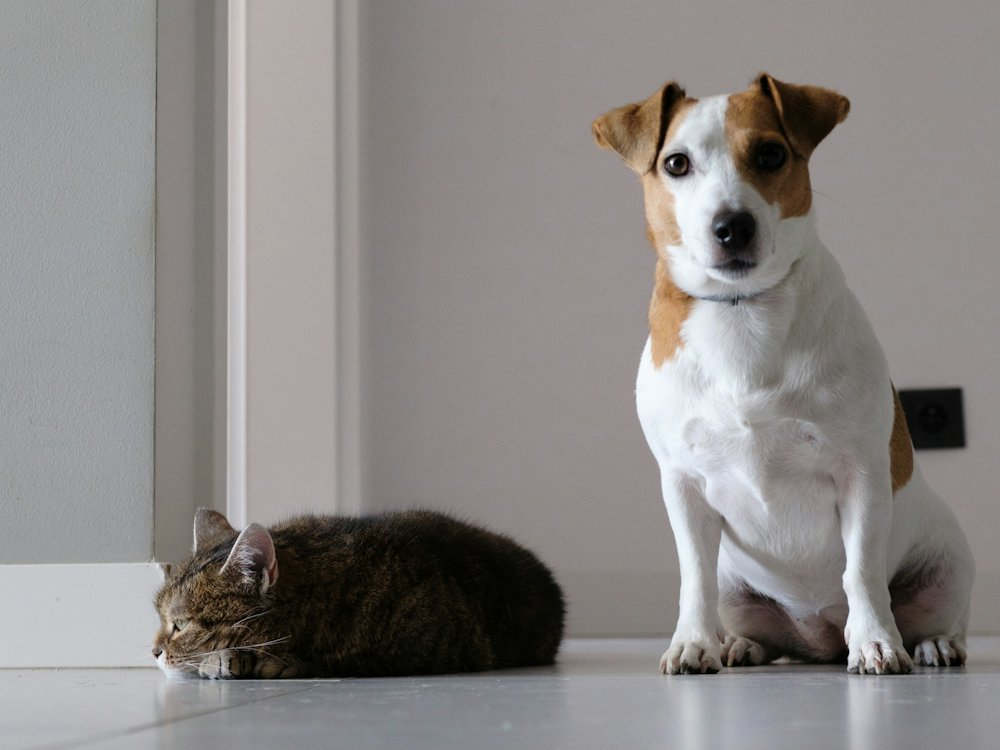

drh. Sancaka Chasyer Ramandinianto, M.Si.
Direktur & Manajer Operasional
Vet nutritionist & physiotherapist
Teman bagi hewan kesayangan masyarakat Indonesia.

Budaya pelayanan LISATentang kami
Lingkar Satwa Animal Care, yang akrab dikenal sebagai LISA Pet Clinic, adalah one stop pet care services yang berfokus pada ketepatan dan kecepatan pelayanan kesehatan hewan dengan konsep comprehensive medical approach and therapy.
Didukung tenaga ahli yang cakap, profesional, dan berintegritas, kami ingin menjadi rujukan fasilitas kesehatan hewan terpercaya di Indonesia, sekaligus membangun kepedulian masyarakat terhadap kesehatan hewan.
Setia menemani kesehatan hewanmu dari kunjungan pertama hingga perawatan lanjutan.
Berbagi pengetahuan agar pemilik makin peka merawat kesehatan hewan.
Tepat dan cepat dalam pelayanan, sesuai fokus kami pada kualitas penanganan.
Menjaga kepercayaanmu lewat informasi yang jujur dan laporan yang jelas.
Tim dokter hewan
Didukung paramedis veteriner serta tim administrasi di setiap cabang.
Direktur & Manajer Operasional
Vet nutritionist & physiotherapist
Wakil Direktur & SPV Tim Medis
Supervisi tim medis
Kepala Cabang Gubeng
Vet dentistry & obstetri-ginekologi
Kepala Cabang Kedurus
Vet internist & diagnostic
Dokter hewan
Vet soft tissue surgery
Dokter hewan
Vet emergency & intensive care
Dokter hewan
Vet surgery & intensive care
Cabang
Cabang Gubeng
Jl. Sumatera No. 31-L, Gubeng, Kertajaya, Surabaya
Senin–Minggu, 09.00–21.00 WIB
Cabang Kedurus
Jl. Mastrip No. 37, Kedurus, Karang Pilang, Surabaya
Senin–Minggu, 09.00–21.00 WIB